Note
Go to the end to download the full example code or to run this example in your browser via Binder.
The Role of Recurrent Network Feedback in TMS-EEG Evoked Responses#
This example gives a replication and didactic explanation of the TMS-EEG modelling and results reported in Momi, Wang, & Griffiths (ELife 2023).
The code includes data fetching, model fitting, and result visualization based on the methods presented in the paper.
Please read our paper, and if you use this code, please cite it:
Momi, D., Wang, Z., Griffiths, J.D. (2023). “TMS-evoked responses are driven by recurrent large-scale network dynamics.” eLife, doi: 10.7554/eLife.83232.
Note
To reproduce the published results exactly, this example uses the
original model code from the paper, kept in whobpyt.depr.momi2023,
and loads model fits computed with it. That code differs from the current
WhoBPyT API. To learn the current API, start with
Getting started: simulate and fit a whole-brain model and Modelling TMS-EEG evoked responses.
0. Overview of study and summary of key results#
(content modified from GriffithsLab/PyTepFit github repo, and the paper itself)
Study Overview#
Grand-mean structural connectome was calculated using neuroimaging data of 400 healthy young individuals (Males= 170; Age range 21-35 years old) from the Human Connectome Project (HCP) Dataset. The Schaefer Atlas of 200 parcels was used, which groups brain regions into 7 canonical functional networks (Visual: VISN, Somato-motor: SMN, Dorsal Attention: DAN, Anterior Salience: ASN, Limbic: LIMN, Fronto-parietal: FPN, Default Mode DMN). These parcels were mapped to the individual’s FreeSurfer parcellation using spherical registration. Once this brain parcellation covering cortical structures was extrapolated, it was then used to extract individual structural connectomes. The Jansen-Rit model 22, a physiological connectome-based neural mass model, was embedded in every parcel for simulating time series. The TMS-induced polarization effect of the resting membrane potential was modeled by perturbing voltage offset uTMS to the mean membrane potential of the excitatory interneurons. A lead-field matrix was then used for moving the parcels’ timeseries into channel space and generating simulated TMS-EEG activity. The goodness-of-fit (loss) was calculated as the spatial distance between simulated and empirical TMS-EEG timeseries from an open dataset. The corresponding gradient was computed using Automatic Differentiation. Model parameters were then updated accordingly using the optimization algorithm (ADAM). The model was run with new updated parameters, and the process was repeated until convergence between simulated and empirical timeseries was found. At the end of iteration, the optimal model parameters were used to generate the fitted simulated TMS-EEG activity, which was compared with the empirical data at both the channel and source level.

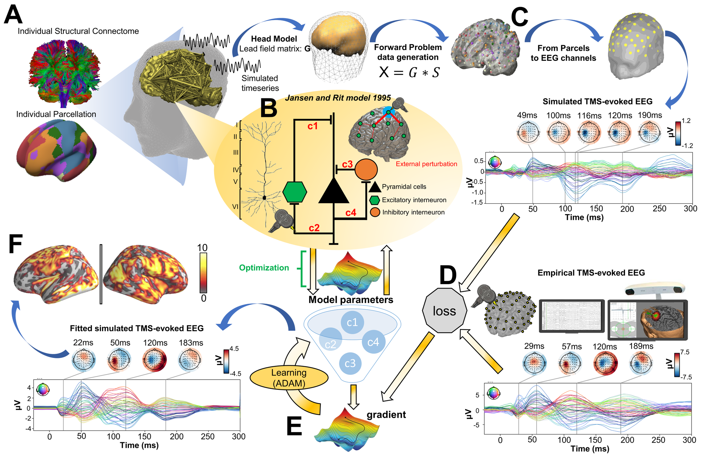
Conceptual Framework#
Studying the role of recurrent connectivity in stimulation-evoked neural responses with computational models. Shown here is a schematic overview of the hypotheses, methodology, and general conceptual framework of the present work. A) Single TMS stimulation (i [diagram], iv [real data]) pulse applied to a target region (in this case left M1) generates an early response (TEP waveform component) at EEG channels sensitive to that region and its immediate neighbours (ii). This also appears in more distal connected regions such as the frontal lobe (iii) after a short delay due to axonal conduction and polysynaptic transmission. Subsequently, second and sometimes third late TEP components are frequently observed at the target site (i, iv), but not in nonconnected regions (v). Our question is whether these late responses represent evoked oscillatory ‘echoes’ of the initial stimulation that are entirely ‘local’ and independent of the rest of the network, or whether they rather reflect a chain of recurrent activations dispersing from and then propagating back to the initial target site via the connectome. B) In order to investigate this, precisely timed communication interruptions or ‘virtual lesions’ (vii) are introduced into an otherwise accurate and well-fitting computational model of TMS-EEG stimulation responses (vi). and the resulting changes in the propagation pattern (viii) were evaluated. No change in the TEP component of interest would support the ‘local echo’ scenario, and whereas suppressed TEPs would support the ‘recurrent activation’ scenario.

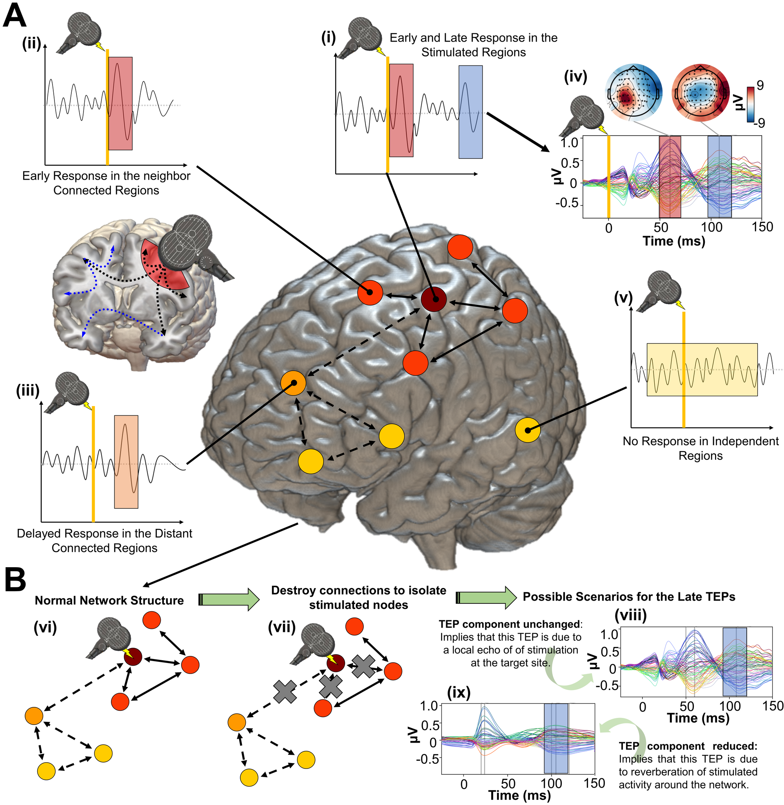
Studying the role of recurrent connectivity in stimulation-evoked neural responses#
Large-scale neurophysiological brain network model#
A brain network model comprising 200 cortical areas was used to model TMS-evoked activity patterns, where each network node represents population-averaged activity of a single brain region according to the rationale of mean field theory60. We used the Jansen-Rit (JR) equations to describe activity at each node, which is one of the most widely used neurophysiological models for both stimulus-evoked and resting-state EEG activity measurements. JR is a relatively coarse-grained neural mass model of the cortical microcircuit, composed of three interconnected neural populations: pyramidal projection neurons, excitatory interneurons, and inhibitory interneurons. The excitatory and the inhibitory populations both receive input from and feed back to the pyramidal population but not to each other, and so the overall circuit motif contains one positive and one negative feedback loop. For each of the three neural populations, the post-synaptic somatic and dendritic membrane response to an incoming pulse of action potentials is described by the second-order differential equation:
which is equivalent to a convolution of incoming activity with a synaptic impulse response function
whose kernel \(h_{e,i}(t)\) is given by
where \(m(t)\) is the (population-average) presynaptic input, \(v(t)\) is the postsynaptic membrane potential, \(H_{e,i}\) is the maximum postsynaptic potential and \(\tau_{e,i}\) lumped representation of delays occurring during the synaptic transmission.
This synaptic response function, also known as a pulse-to-wave operator (Freeman et al., 1975)), determines the excitability of the population, as parameterized by the rate constants $a$ and $b$, which are of particular interest in the present study. Complementing the pulse-to-wave operator for the synaptic response, each neural population also has wave-to-pulse operator [Freeman et al., 1975](https://www.sciencedirect.com/book/9780122671500/mass-action-in-the-nervous-system) that determines the its output - the (population-average) firing rate - which is an instantaneous function of the somatic membrane potential that takes the sigmoidal form
where \(e_{0}\) is the maximum pulse, \(r\) is the steepness of the sigmoid function, and \(v_0\) is the postsynaptic potential for which half of the maximum pulse rate is achieved.
In practice, we re-write the three sets of second-order differential equations that follow the form in (1) as pairs of coupled first-order differential equations, and so the full JR system for each individual cortical area \(j \in i:N\) in our network of \(N=200\) regions is given by the following six equations:
where \(v_{1,2,3}\) is the average postsynaptic membrane potential of populations of the excitatory stellate cells, inhibitory interneuron, and excitatory pyramidal cell populations, respectively. The output \(y(t) = v_1(t) - v_2(t)\) is the EEG signal.
Data#
For the purposes of this study, already preprocessed TMS-EEG data following a stimulation of primary motor cortex (M1) of twenty healthy young individuals (24.50 ± 4.86 years; 14 females) were taken from an open dataset (https://figshare.com/articles/dataset/TEPs-_SEPs/7440713). For details regarding on the data acquisition and the preprocessing steps please refer to the original paper
Biabani M, Fornito A, Coxon JP, Fulcher BD & Rogasch NC (2021). The correspondence between EMG and EEG measures of changes in cortical excitability following transcranial magnetic stimulation. J Physiol 599, 2907–2932.
Biabani M, Fornito A, Mutanen TP, Morrow J & Rogasch NC (2019). Characterizing and minimizing the contribution of sensory inputs to TMS-evoked potentials. Brain Stimulat 12, 1537–1552.
Main Results#
Comparison between simulated and empirical TMS-EEG data in channel space. A) Empirical and simulated TMSEEG time series for 3 representative subjects showing a robust recovery of individual subjects’ empirical TEP propagation patterns in model-generated activity EEG time series. B) Pearson correlation coefficients over subjects between empirical and simulated TMS-EEG time series. C) Time-wise permutation tests results showing the significant Pearson correlation coefficient and the corresponding reversed p-values (bottom) for every electrode. D) PCI values extracted from the empirical (orange) and simulated (blue) TMS-EEG time series (left). Significant positive correlation (R2 = 80%, p < 0.0001) was found between the simulated and the empirical PCI (right).

Comparison between simulated and empirical TMS-EEG data in source space. A) TMS-EEG time series showing a robust recovery of grand-mean empirical TEP patterns in model-generated EEG time series. B) Source reconstructed TMS-evoked propagation pattern dynamics for empirical (top) and simulated (bottom) data. C) Time-wise permutation test results showing the significant Pearson correlation coefficient (tp) and the corresponding reversed p-values (bottom) for every vertex. Network-based dSPM values extracted for the grand mean empirical (left) and simulated (right) source-reconstructed time series.

Synaptic time constant of inhibitory population affects early and late TEP amplitudes. A) Singular value decomposition (SVD) topoplots for simulated (top) and empirical (bottom) TMS-EEG data. By looking at simulated (top) and empirical (bottom) grand mean timeseries, results revealed that the first (orange outline) and the second (blue outline) components were located ∼65ms and ∼110ms after the TMS pulse. B) First (orange outline) and second (blue outline) components latency and amplitude were extracted for every subject and the distribution plots (top row) show the time location where higher cosine similarity with the SVD components were found. Scatter plots (bottom row) show a negative (left) and positive (right) significant correlation between the synaptic time constant of the inhibitory population and the amplitude of the the first and second component. C) Model- generated first and second SVD components for 2 representative subjects with high (top) and low (bottom) value for the synaptic time constant of the inhibitory population. Topoplots show that higher synaptic time constant affects the amplitude of the individual first and second SVD components. D) Model-generated TMS-EEG data were run using the optimal (top right) or a value decreased by 85% (central left) for the synaptic time constant of the inhibitory population. Absolute values for different values of the synaptic time constant of the inhibitory population (bottom right). Results show an increase in the amplitude of the early first local component and a decrease of the second latest global component

List of analyses and figures#
The following code replicates key figures from the paper “TMS-evoked responses are driven by recurrent large-scale network dynamics”. The core finding of the paper is that early TEP components (<100 ms) arise from local reverberatory activity in the stimulated region, while later components (>100 ms) are driven by large-scale recurrent network activity propagating across cortical and subcortical areas.
- The replicated plots include scalp topographies and time series analyses
highlighting TEP dynamics, extracted peaks, and modeled network responses, with code provided for EEG signal extraction, peak localization, and computational modeling.
Replicated Figures and Code Sections The following figures from the paper are replicated in the provided Jupyter Notebook:
- Appendix 2 — Figure 3
Code Section: 3.1
- Appendix 2 — Figure 5 (Panel A)
Code Section: 3.3
- Appendix 2 — Figure 10
Code Section: 3.4
- Appendix 3- Figure 1
Code Section: 4.1
- Figure 3 (Panel E)
Code Section: 4.2
- Figure 2 (Panel D)
Code Section: 4.3
1. Setup#
Importage:
# os stuff
import os
import sys
from whobpyt.depr.momi2023.jansen_rit import ParamsJR, Model_fitting, RNNJANSEN, Costs, OutputNM
from whobpyt.depr.momi2023.pci import calc_PCIst, dimensionality_reduction, calc_snr, get_svd, apply_svd, state_transition_quantification,\
recurrence_matrix, distance2transition, distance2recurrence, diff_matrix, calc_maxdim, dimension_embedding,\
preprocess_signal, avgreference, undersample_signal, baseline_correct, get_time_index, bar_plot, \
spider_plot
from whobpyt.depr.momi2023.pci import bar_plot as bp_1
# viz stuff
import matplotlib.pyplot as plt
# python stuff
import numpy as np
import pandas as pd
import scipy.io
import gdown
import pickle
import warnings
warnings.filterwarnings('ignore')
#neuroimaging packages
import mne
import torch
import scipy
from scipy import io
import sklearn
from sklearn.cluster import KMeans
import seaborn as sns
import time
import glob
import re
from whobpyt.datasets.fetchers import fetch_egmomi2023
Download data
files_dir = fetch_egmomi2023()
sc_file = files_dir + '/Schaefer2018_200Parcels_7Networks_count.csv'
high_file =files_dir + '/only_high_trial.mat'
dist_file = files_dir + '/Schaefer2018_200Parcels_7Networks_distance.csv'
file_eeg = files_dir + '/label_ts_corrected'
file_leadfield = files_dir + '/leadfield'
file_eeg = files_dir + '/real_EEG'
eeg = np.load(file_eeg, allow_pickle=True)
[1/21] Downloading sub_0_fittingresults_stim_exp.pkl
[2/21] Downloading sub_1_fittingresults_stim_exp.pkl
[3/21] Downloading sub_2_fittingresults_stim_exp.pkl
[4/21] Downloading sub_3_fittingresults_stim_exp.pkl
[5/21] Downloading sub_4_fittingresults_stim_exp.pkl
[6/21] Downloading sub_5_fittingresults_stim_exp.pkl
[7/21] Downloading sub_0_leadfield
[8/21] Downloading sub_1_leadfield
[9/21] Downloading sub_2_leadfield
[10/21] Downloading sub_3_leadfield
[11/21] Downloading sub_4_leadfield
[12/21] Downloading sub_5_leadfield
[13/21] Downloading stim_weights.npy
[14/21] Downloading Schaefer2018_200Parcels_7Networks_distance.csv
[15/21] Downloading Schaefer2018_200Parcels_7Networks_count.csv
[16/21] Downloading rh.Schaefer2018_200Parcels_7Networks_order.annot
[17/21] Downloading real_EEG
[18/21] Downloading only_high_trial.mat
[19/21] Downloading lh.Schaefer2018_200Parcels_7Networks_order.annot
[20/21] Downloading all_avg.mat_avg_high_epoched
[21/21] Downloading leadfield
2 - Model fitting and key results#
2.1 Load the data#
268.31223 -125.81516
(20, 62, 2000)
2.2 Plotting Example Trials and Stimulated Data#
pck_files = sorted(glob.glob(files_dir + '/*_fittingresults_stim_exp.pkl'))
pck_files.sort(key=lambda var:[int(x) if x.isdigit() else x for x in re.findall(r'[^0-9]|[0-9]+', var)])
for sbj2plot in range(len(pck_files)):
print(f"Processing Subject {sbj2plot + 1}")
# Load EEG epochs
epochs = mne.read_epochs(files_dir + '/all_avg.mat_avg_high_epoched', verbose=False)
evoked = epochs.average()
# Extract empirical data for the current subject
empirical_data = epochs.average()
empirical_data.data = epochs._data[sbj2plot, :, :]
# Identify key EEG peak times
ts_args = dict(xlim=[-0.025, 0.3])
ch, peak_locs1 = evoked.get_peak(ch_type='eeg', tmin=-0.05, tmax=0.04)
ch, peak_locs2 = evoked.get_peak(ch_type='eeg', tmin=0.02, tmax=0.1)
ch, peak_locs4 = evoked.get_peak(ch_type='eeg', tmin=0.12, tmax=0.15)
ch, peak_locs5 = evoked.get_peak(ch_type='eeg', tmin=0.15, tmax=0.20)
# Define time points for joint plot
times = [peak_locs1, peak_locs2, peak_locs4, peak_locs5]
# Plot empirical TEPs for the current subject
empirical_data.plot_joint(ts_args=ts_args, times=times, title=f'Empirical TEPs for Subject {sbj2plot + 1}')
# Load simulated data from pickle file
with open(pck_files[sbj2plot], 'rb') as f:
data = pickle.load(f)
# Replace EEG data with simulated data for the subject
simulated_data = epochs.average()
simulated_data.data[:, 900:1300] = data.output_sim.eeg_test
# Plot simulated TEPs for the current subject
simulated_data.plot_joint(ts_args=ts_args, times=times, title=f'Simulated TEPs for Subject {sbj2plot + 1}')
sbj2plot = "0"
sbj2plot = int(sbj2plot)
epochs = mne.read_epochs(files_dir + '/all_avg.mat_avg_high_epoched', verbose=False)
evoked = epochs.average()
empirical_data = epochs.average()
empirical_data.data = epochs._data[sbj2plot,:,:]
ts_args = dict(xlim=[-0.025,0.3])
ch, peak_locs1 = evoked.get_peak(ch_type='eeg', tmin=-0.05, tmax=0.04)
ch, peak_locs2 = evoked.get_peak(ch_type='eeg', tmin=0.02, tmax=0.1)
#ch, peak_locs3 = evoked.get_peak(ch_type='eeg', tmin=0.1, tmax=0.12)
ch, peak_locs4 = evoked.get_peak(ch_type='eeg', tmin=0.12, tmax=0.15)
ch, peak_locs5 = evoked.get_peak(ch_type='eeg', tmin=0.15, tmax=0.20)
times = [peak_locs1, peak_locs2, peak_locs4, peak_locs5]
empirical_data.plot_joint(ts_args=ts_args, times=times, title='Empirical TEPs for sub' + str(sbj2plot) );
with open(pck_files[sbj2plot], 'rb') as f:
data = pickle.load(f)
simulated_data = epochs.average()
simulated_data.data[:,900:1300]= data.output_sim.eeg_test
simulated_data.plot_joint(ts_args=ts_args, times=times, title='Simulated TEPs for sub' + str(sbj2plot) );
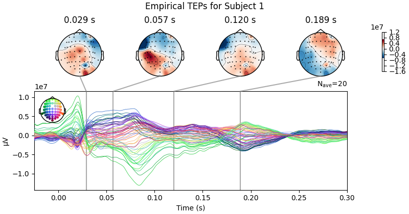
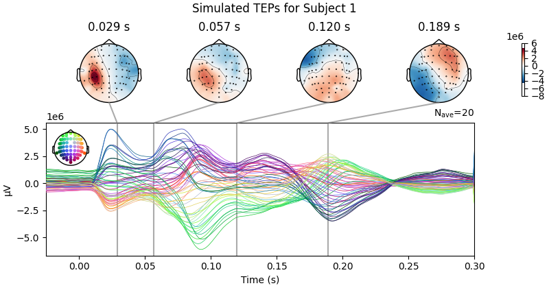
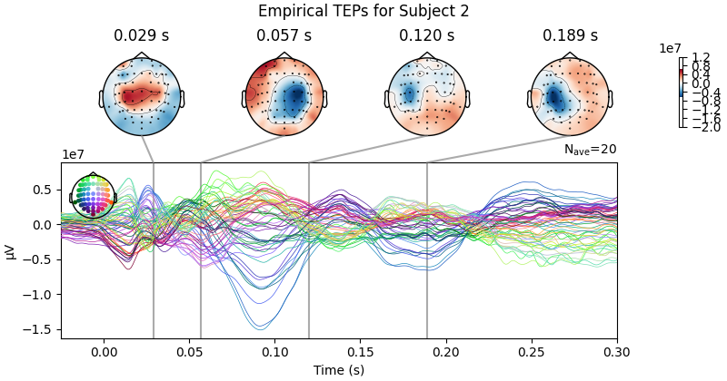
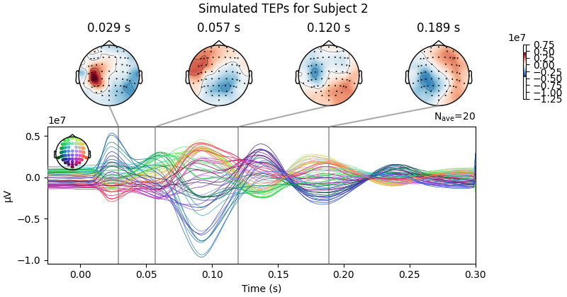
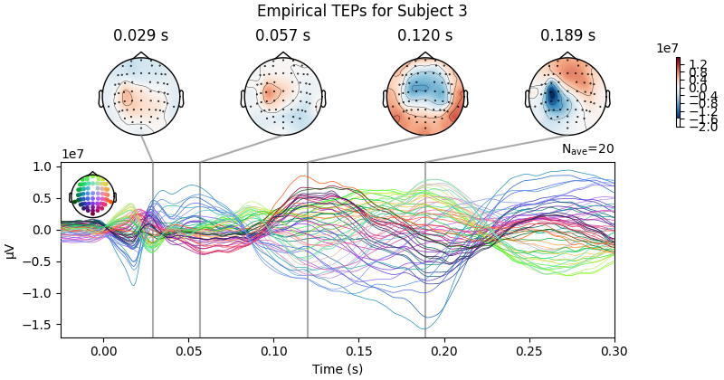
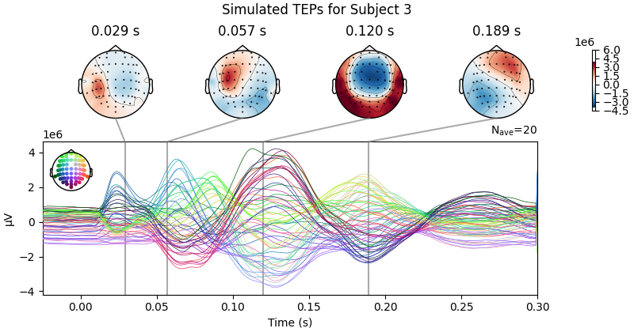
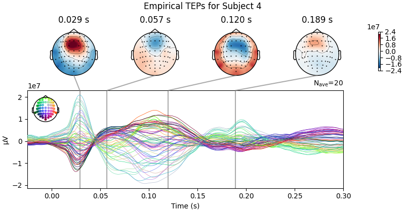
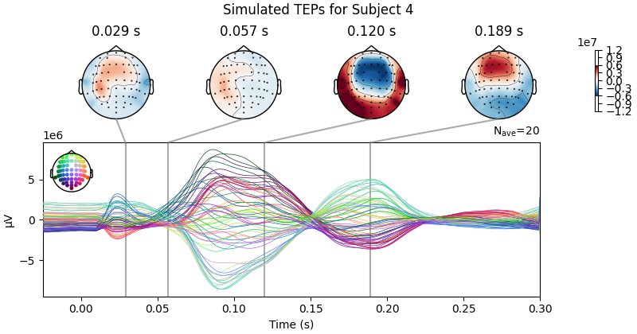
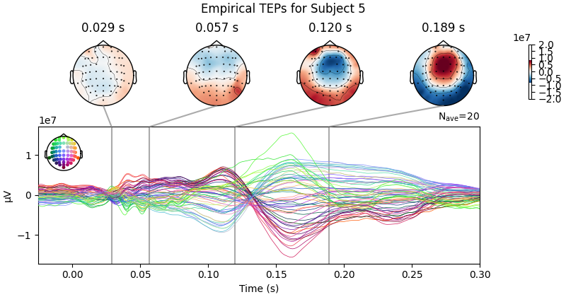
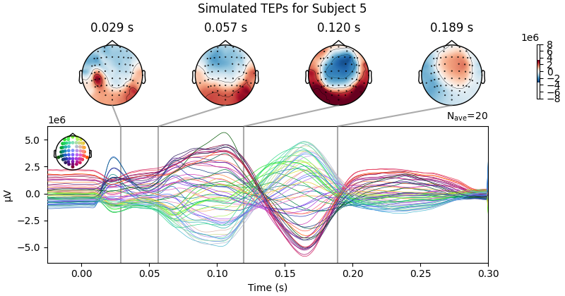
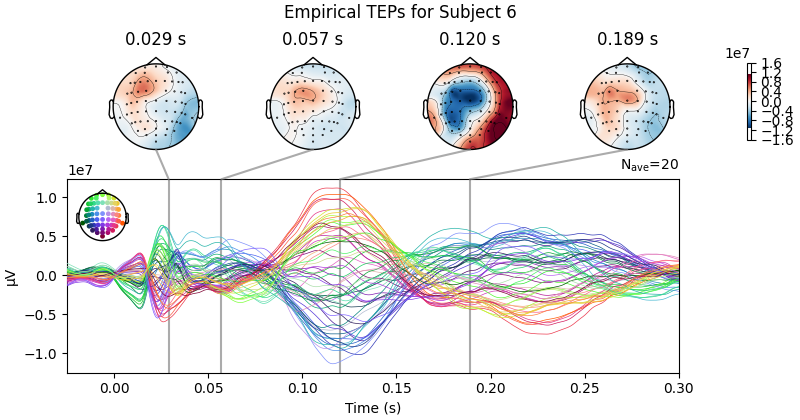
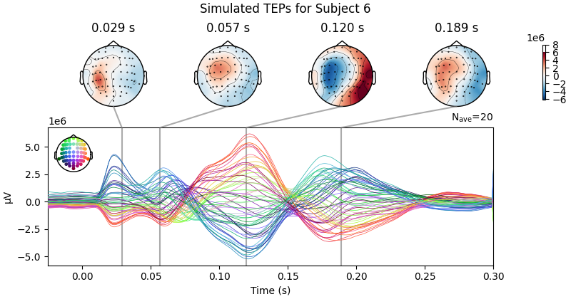
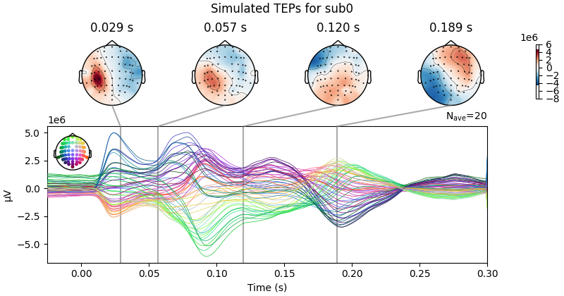
Processing Subject 1
Projections have already been applied. Setting proj attribute to True.
Projections have already been applied. Setting proj attribute to True.
Processing Subject 2
Projections have already been applied. Setting proj attribute to True.
Projections have already been applied. Setting proj attribute to True.
Processing Subject 3
Projections have already been applied. Setting proj attribute to True.
Projections have already been applied. Setting proj attribute to True.
Processing Subject 4
Projections have already been applied. Setting proj attribute to True.
Projections have already been applied. Setting proj attribute to True.
Processing Subject 5
Projections have already been applied. Setting proj attribute to True.
Projections have already been applied. Setting proj attribute to True.
Processing Subject 6
Projections have already been applied. Setting proj attribute to True.
Projections have already been applied. Setting proj attribute to True.
Projections have already been applied. Setting proj attribute to True.
Projections have already been applied. Setting proj attribute to True.
Result Description: Simulated TMS-evoked potentials (TEPs) for subject only_high_trial[0] This plot simulates the TMS-evoked potentials (TEPs), typically observed in EEG studies combining Transcranial Magnetic Stimulation (TMS) and EEG to investigate cortical excitability and connectivity. Each peak or feature in the EEG signal corresponds to specific neural processes triggered by TMS.
2.3 Visualize Structural Connectivity and Stimulation Weights#
sc_df = pd.read_csv(sc_file, header=None, sep=' ')
sc = sc_df.values
dist_df = pd.read_csv(dist_file, header=None, sep=' ')
dist = dist_df.values
sc = 0.5*(sc+sc.T)
sc =np.log1p(sc)/np.linalg.norm(np.log1p(sc))
stim_weights_file = files_dir + '/stim_weights.npy'
stim_weights = np.load(stim_weights_file)
ki0 =stim_weights[:,np.newaxis]
# plt.plot(ki0)
2.4 Model Setup and Training#
Run a shorter version with num_epochs = 2 to check the process without overwriting the results of the full run. for the convergence 100-200 epochs need to run for the trainning
start_time = time.time()
node_size = stim_weights.shape[0]
output_size = 62 ##gm.shape[0]
batch_size = 50
step_size = 0.0001
input_size = 3
num_epochs = 2
tr = 0.001
state_size =6
base_batch_num = 20
lm_v = np.zeros((output_size,node_size))
#['gm']:#[0, 1,2,3,5,6,7,8,9,10, 12,13,14,15,16,17,18]:#
#for i in range(data_high['only_high_trial'].shape[0]):
for i in range(1):
print('sub: ', i)
data_mean = [data_high['only_high_trial'][i]]*num_epochs
#data_mean = [gm]*num_epochs
data_mean =np.array(data_mean)
#file_leadfield = lf_dir+f'/sub{str(i+1).zfill(3)}/leadfield.npy'
sub_file_leadfield = files_dir + '/sub_%s_leadfield' % (i+1)
print('loading leadfield file: %s' %sub_file_leadfield)
lm = np.load(sub_file_leadfield, allow_pickle=True)
par = ParamsJR('JR', A = [3.25, 0], a= [100, 0.5], B = [22, 0], b = [50, 1], g=[1000, .1], \
c1 = [135, 0.2], c2 = [135*0.8, 0.4], c3 = [135*0.25, 0.8], c4 = [135*0.25, 0.8],\
std_in=[100, 10], vmax= [5, 0], v0=[6,0], r=[0.56, 0], y0=[2 * np.ones((output_size, 1)), 2 * np.ones((output_size, 1))],\
mu = [1., 2.5], k = [10, .3], cy0 = [5, 0], ki=[ki0, 0], lm=[lm, 1.0 * np.ones((output_size, node_size))+lm_v]
,w_bb=[sc, 50 * np.ones((node_size, node_size))])
model = RNNJANSEN(input_size, node_size, batch_size, step_size, output_size, tr, sc, lm, dist, True, False, par)
print('call model fitting')
# call model fit method
F = Model_fitting(model, data_mean[:,:,900:1300], num_epochs, 0)
# fit data(train)
u = np.zeros((node_size,10,400))
u[:,:,110:120]= 1000
output_train = F.train(u=u)
u = np.zeros((node_size,10,400))
u[:,:,110:120]= 1000
X0 = np.random.uniform(0, 5, (node_size, state_size))
hE0 = np.random.uniform(0, 5, (node_size, 500))
output_test = F.test(X0, hE0, base_batch_num, u=u)
sc_mod = np.zeros((200,200))
mask = np.tril_indices(200,-1)
sc_mod[mask] = F.output_sim.weights[-10:,:].mean(0)
sc_mod = sc_mod+sc_mod.T
fig, ax = plt.subplots(1, 1, figsize=(5, 4))
ax.imshow(np.log1p(sc_mod), cmap = 'bwr')
plt.show()
fig, ax = plt.subplots(1,3, figsize=(12,8))
ax[0].plot((F.output_sim.E_test-F.output_sim.I_test).T)
ax[0].set_title('Test: sourced EEG')
ax[1].plot(F.output_sim.eeg_test.T)
ax[1].set_title('Test')
ax[2].plot(data_high['only_high_trial'][i].T[900:1300,:])
ax[2].set_title('empirical')
plt.show()
end_time = time.time()
print('running time is {0} \'s'.format(end_time - start_time ))
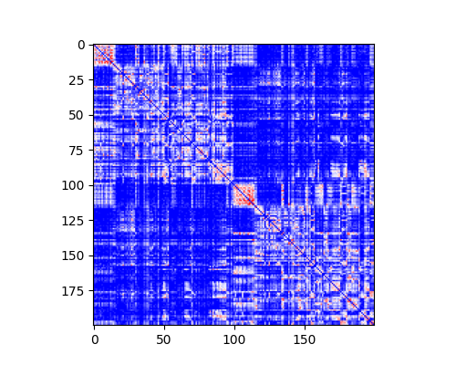
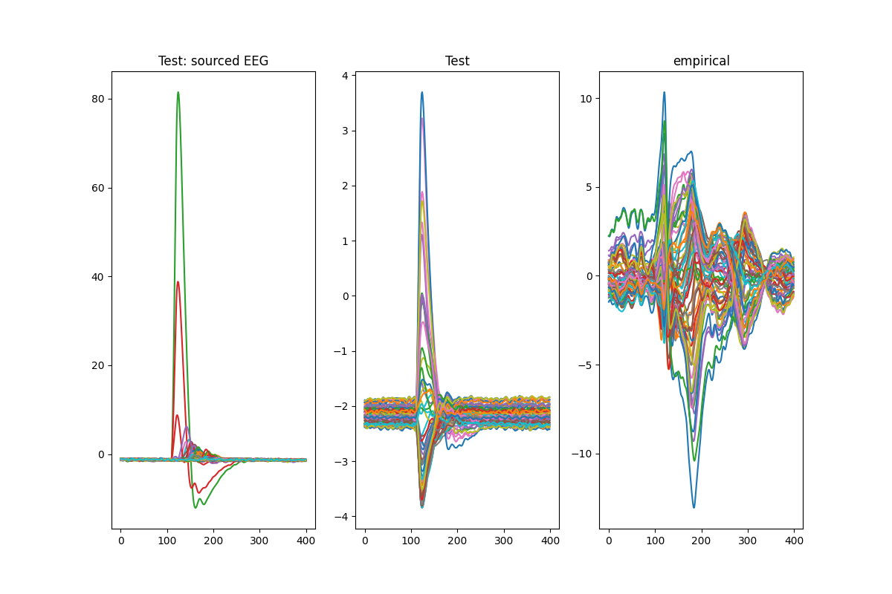
sub: 0
loading leadfield file: /home/runner/.whobpyt/data/eg__momi2023/sub_1_leadfield
call model fitting
epoch: 0 4034.7136
epoch: 0 0.39126958267180695 cos_sim: 0.1091794168089291
epoch: 1 -1168.6849
epoch: 1 0.4305785649997093 cos_sim: -0.0005451651500056537
running time is 27.15607786178589 's
check the output of output_sim.eeg_test
# files_dir = '/external/rprshnas01/netdata_kcni/jglab/Data/Davide/reproduce_Momi_et_al_2022/PyTepFit/data'
pck_files = sorted(glob.glob(files_dir + '/*_fittingresults_stim_exp.pkl'))
pck_files.sort(key=lambda var:[int(x) if x.isdigit() else x for x in re.findall(r'[^0-9]|[0-9]+', var)])
sbj = 0
with open(pck_files[sbj], 'rb') as f:
data = pickle.load(f)
print(data.output_sim.eeg_test.shape)
(62, 400)
3 - Exploring model parameters#
3.1 Load and Sort Simulation Result Files#
pck_files = sorted(glob.glob(files_dir + '/*_fittingresults_stim_exp.pkl'))
pck_files.sort(key=lambda var:[int(x) if x.isdigit() else x for x in re.findall(r'[^0-9]|[0-9]+', var)])
Extract Simulation Data Keys
Initialize Data Storage Arrays Create arrays to store different types of simulation data based on their dimensions.
keys.remove('output_name')
for k in keys:
variable_name = 'all_' + k
if (k == 'E_train' or k == 'E_test' or k =='Ev_train' or k == 'Ev_test' or k =='I_train'
or k =='I_test' or k =='Iv_train' or k =='Iv_test' or k =='P_train' or k =='P_test' or k =='Pv_train'
or k =='Pv_test' or k =='EEG_train' or k =='EEG_test'):
exec(variable_name + " = np.zeros((len(pck_files), getattr(data.output_sim, k).shape[0], getattr(data.output_sim, k).shape[1]))")
elif(k =='y0' or k == 'y0_m' or k =='y0_v' or k == 'leadfield'):
exec(variable_name + " = np.zeros((len(pck_files), getattr(data.output_sim, k).shape[1]))")
elif(k =='weights'):
exec(variable_name + " = np.zeros((len(pck_files), round(np.sqrt(data.output_sim.weights.shape[1]*2)+1), \
round(np.sqrt(data.output_sim.weights.shape[1]*2)+1)))")
elif(k =='lm'):
exec(variable_name + " = np.zeros((len(pck_files), 62, 200))")
else:
exec(variable_name + " = np.zeros((len(pck_files)))")
for sub in range(len(pck_files)):
with open(pck_files[sub], 'rb') as f:
data = pickle.load(f)
for k in keys:
variable_name = 'all_' + k
if (k == 'E_train' or k == 'E_test' or k =='Ev_train' or k == 'Ev_test' or k =='I_train'
or k =='I_test' or k =='Iv_train' or k =='Iv_test' or k =='P_train' or k =='P_test' or k =='Pv_train'
or k =='Pv_test' or k =='EEG_train' or k =='EEG_test'):
exec(variable_name + "[sub,:,:] = getattr(data.output_sim, k)")
elif (k =='y0' or k == 'y0_m' or k =='y0_v'):
exec(variable_name + "[sub,:] = getattr(data.output_sim, k)[-1]")
elif (k == 'lm'):
lm_mod =np.mean(getattr(data.output_sim, k)[-10:,:], axis=0)
lm_mod = lm_mod.reshape(62,200)
exec(variable_name + "[sub,:,:] = lm_mod")
#exec(variable_name + "[sub,:] = np.mean(getattr(data.output_sim, k)[-10:,:], axis=0)")
elif (k == 'weights'):
sc_mod = np.zeros((200,200))
mask = np.tril_indices(200,-1)
sc_mod[mask] =np.mean(getattr(data.output_sim, k)[-10:,:], axis=0)
sc_mod = sc_mod+sc_mod.T
exec(variable_name + "[sub,:,:] = sc_mod")
elif (k == 'loss'):
exec(variable_name + "[sub] = getattr(data.output_sim, k)[-1]")
else:
exec(variable_name + "[sub] = getattr(data.output_sim, k)[-1][0]")
all_params = {}
for i in keys:
variable_name = 'all_' + keys[keys.index(i)]
all_params[i] = locals()[variable_name]
Filter Data for DataFrame
# Select specific keys for building a DataFrame and create a DataFrame with those values.
df = {}
for j in keys[15:-5]:
df[j] = all_params[j]
sim_eeg = []
for sbj2import in range(len(pck_files)):
with open(pck_files[sbj2import], 'rb') as f:
data = pickle.load(f)
sim_eeg.append(data.output_sim.eeg_test)
sim_eeg = np.array(sim_eeg)
new_df = pd.DataFrame(df[list(df.keys())[0]],columns=[list(df.keys())[0]])
for j in range(1,len(keys[15:-5])):
if len(df[list(df.keys())[j]].shape) > 1:
continue
new_df[list(df.keys())[j]] = df[list(df.keys())[j]]
print(new_df.head())
new_df1 = new_df[['a', 'b', 'c1', 'c2', 'c3', 'c4', 'g', 'k', 'mu']]
print(new_df1.head())
a a_m a_v ... mu mu_m mu_v
0 99.347740 99.349411 13.423514 ... 0.724521 0.724521 26.806150
1 97.902908 97.906097 17.277964 ... 1.257499 1.257499 26.730782
2 96.159073 96.155228 17.785526 ... 0.884640 0.887312 27.587242
3 97.962982 97.962212 18.689106 ... 1.154494 1.151102 26.320961
4 97.748863 97.741402 17.297514 ... 1.025875 1.021145 26.105455
[5 rows x 29 columns]
a b c1 ... g k mu
0 99.347740 51.732155 134.248627 ... 1010.790710 8.622959 0.724521
1 97.902908 50.919029 132.442017 ... 995.457092 8.491941 1.257499
2 96.159073 48.930202 132.071304 ... 1006.695007 5.207799 0.884640
3 97.962982 49.428665 140.498962 ... 1001.789185 7.374860 1.154494
4 97.748863 49.748447 136.682190 ... 1000.929565 8.237830 1.025875
[5 rows x 9 columns]
3.2 Plot Post Distributions of the fitted model parameters#
sns.set_style('darkgrid',{'axes.edgecolor': '.9'},)
f, ax = plt.subplots(3,3,figsize = (25,13))
plt.rcParams["patch.force_edgecolor"] = True
row = 0
col = 0
for k in new_df1.keys():
sns.distplot(new_df1[k],bins=10,color='lightblue', hist_kws=dict(edgecolor="grey", linewidth=2.5),ax=ax[row][col])
#sns.displot(new_df1[k], bins=10, ax=ax[row][col])
row=row+1
if row>2:
row=0
col=col+1
#f.savefig('/content/drive/MyDrive/TORONTO/TMS_EEG_model/saving-a-high-resolution-seaborn-plot.png', dpi=300)
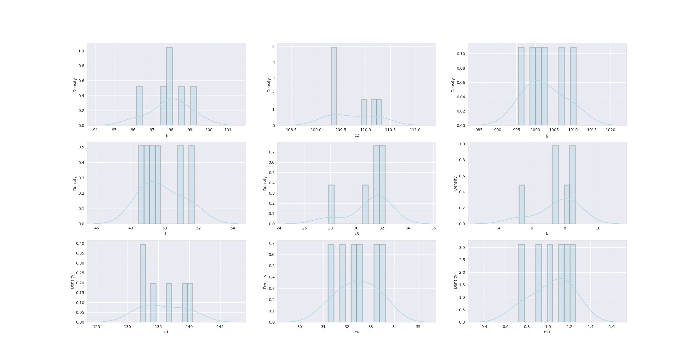
Summary of Results:
This plot can be found in Appendix 2—figure 3
Prior Distributions of physiological parameter estimates over subjects.
np.random.seed(50)
parameters = {
"average synaptic time constant excitatory population (a=1/τe)": np.random.normal(98, 2, 100),
"Local gain from pyramidal to excitatory population (C2)": np.random.normal(110, 1, 100),
"Global gain (g)": np.random.normal(1000, 10, 100),
"Average synaptic time constant inhibitory population (b=1/τi)": np.random.normal(50, 1.5, 100),
"Local gain from inhibitory to pyramidal population (C3)": np.random.normal(32, 2, 100),
"Local gain from pyramidal to inhibitory population (C4)": np.random.normal(33, 2, 100),
"Local gain from excitatory to pyramidal population (C1)": np.random.normal(135, 5, 100),
}
# Simulated Empirical and Fitted Structural Connectomes
num_regions = 40
empirical_connectome = np.random.uniform(0, 0.001, (num_regions, num_regions))
fitted_connectome = empirical_connectome + np.random.normal(0, 0.0001, (num_regions, num_regions))
# Emphasize diagonal for better visualization
np.fill_diagonal(empirical_connectome, np.random.uniform(0, 0.001, num_regions))
np.fill_diagonal(fitted_connectome, np.random.uniform(0, 0.001, num_regions))
# Plot Histagram
sns.set_style('darkgrid')
fig, axes = plt.subplots(3, 3, figsize=(20, 14))
keys = list(parameters.keys())
for i, ax in enumerate(axes.flat[:7]):
sns.histplot(parameters[keys[i]], bins=10, kde=True, color='lightblue',
edgecolor="grey", linewidth=2.5, ax=ax)
ax.set_title(keys[i], fontsize=10)
plt.show()
"""# Plot Empirical Structural Connectome
sns.heatmap(empirical_connectome, ax=axes[2][1], cmap='viridis', cbar=True, vmin=0, vmax=0.001)
axes[2][1].set_title("Empirical Structural Connectome", fontsize=12)
axes[2][1].annotate("Empirical\nStructural Connectome", xy=(50, -20), xytext=(-60, -90),
textcoords='offset points', fontsize=10, arrowprops=dict(arrowstyle="->"))
# Plot Fitted Structural Connectome
sns.heatmap(fitted_connectome, ax=axes[2][2], cmap='viridis', cbar=True, vmin=0, vmax=0.001)
axes[2][2].set_title("Fitted Structural Connectome", fontsize=12)
axes[2][2].annotate("Fitted\nStructural Connectome", xy=(50, -20), xytext=(60, -90),
textcoords='offset points', fontsize=10, arrowprops=dict(arrowstyle="->"))
axes[2][0].axis('off')
# Final layout and title
plt.tight_layout()
plt.suptitle("Parameter Histograms and Structural Connectomes", fontsize=16, y=1.02)
plt.show()
"""
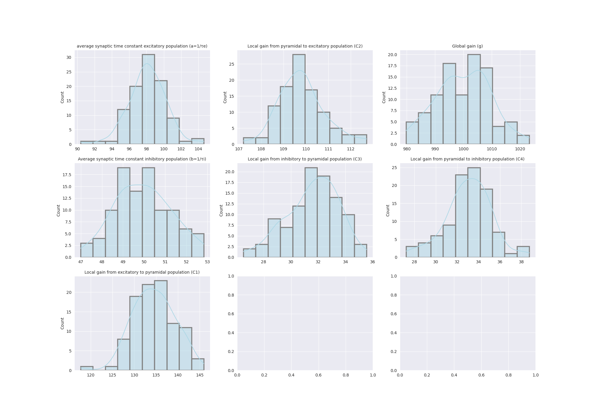
Result Description: This plot can be found in Appendix 2—figure 3 Distributions of physiological parameter estimates over subjects. Histograms and kernel density estimates of the estimated values for the Jansen-Rit model physiological parameters over all subjects. Also shown are prior and posterior parameter values for anatomical connectome weights for a single example subject (bottom right). Parameter estimation was performed using our novel automatic differentiation and gradient-based approach inspired by current techniques in deep learning (Griffiths et al., 2022).
3.3 Singular Value Decomposition (SVD) of Empirical and Simulated EEG#
Compute SVD for Specific Time Window: Perform SVD on both empirical and simulated EEG data to extract eigenvectors and explained variance.
# Use the default matplotlib style
plt.style.use('default')
# Define time range for analysis
xmin = -0.05 # Start time (in seconds)
xmax = 0.3 # End time (in seconds)
# Read epoched EEG data
epochs = mne.read_epochs(files_dir + '/all_avg.mat_avg_high_epoched', verbose=False)
evoked = epochs.average()
# Extract data for the specified time range
A = evoked.data[:, np.where(evoked.times == xmin)[0][0]:np.where(evoked.times == xmax)[0][0]]
# Perform Singular Value Decomposition (SVD)
U, S, V = np.linalg.svd(A)
S_PC = (100 * S) / (np.sum(S))
# Simulate EEG data in the epochs
epochs = mne.read_epochs(files_dir + '/all_avg.mat_avg_high_epoched', verbose=False)
# Replace a specific time window with simulated EEG data
for sbj in range(len(pck_files)): # Iterate through subjects
epochs._data[sbj, :, 900:1300] = sim_eeg[sbj, :, :] # Replace data in the defined range
# Compute average for modified epochs
evoked = epochs.average()
# Extract data for the same time range from the modified epochs
A = evoked.data[:, np.where(evoked.times == xmin)[0][0]:np.where(evoked.times == xmax)[0][0]]
# Perform SVD on the modified data
U_sim, S_sim, V_sim = np.linalg.svd(A)
S_PC_sim = (100 * S_sim) / (np.sum(S_sim)) # Calculate variance explained
# Create plots for simulated data
fig, axes = plt.subplots(figsize=(25, 5), nrows=1, ncols=5)
# Plot topographies of the first five eigenvectors for simulated data
mne.viz.plot_topomap(U_sim[:, 0], epochs.info, show=False, axes=axes[0])
axes[0].set_title('eigenvector#1 variance explained ' + str(round(S_PC_sim[0], 2)) + '%')
mne.viz.plot_topomap(U_sim[:, 1], epochs.info, show=False, axes=axes[1])
axes[1].set_title('eigenvector#2 variance explained ' + str(round(S_PC_sim[1], 2)) + '%')
mne.viz.plot_topomap(U_sim[:, 2], epochs.info, show=False, axes=axes[2])
axes[2].set_title('eigenvector#3 variance explained ' + str(round(S_PC_sim[2], 2)) + '%')
mne.viz.plot_topomap(U_sim[:, 3], epochs.info, show=False, axes=axes[3])
axes[3].set_title('eigenvector#4 variance explained ' + str(round(S_PC_sim[3], 2)) + '%')
mne.viz.plot_topomap(U_sim[:, 4], epochs.info, show=False, axes=axes[4])
axes[4].set_title('eigenvector#5 variance explained ' + str(round(S_PC_sim[4], 2)) + '%')
# Create plots for original data
fig, axes = plt.subplots(figsize=(25, 5), nrows=1, ncols=5)
# Plot topographies of the first five eigenvectors for original data
mne.viz.plot_topomap(U[:, 0], epochs.info, show=False, axes=axes[0])
axes[0].set_title('eigenvector#1 variance explained ' + str(round(S_PC[0], 2)) + '%')
mne.viz.plot_topomap(-U[:, 1], epochs.info, show=False, axes=axes[1]) # Flip sign for clarity
axes[1].set_title('eigenvector#2 variance explained ' + str(round(S_PC[1], 2)) + '%')
mne.viz.plot_topomap(U[:, 2], epochs.info, show=False, axes=axes[2])
axes[2].set_title('eigenvector#3 variance explained ' + str(round(S_PC[2], 2)) + '%')
mne.viz.plot_topomap(U[:, 3], epochs.info, show=False, axes=axes[3])
axes[3].set_title('eigenvector#4 variance explained ' + str(round(S_PC[3], 2)) + '%')
mne.viz.plot_topomap(U[:, 4], epochs.info, show=False, axes=axes[4])
axes[4].set_title('eigenvector#5 variance explained ' + str(round(S_PC[4], 2)) + '%')
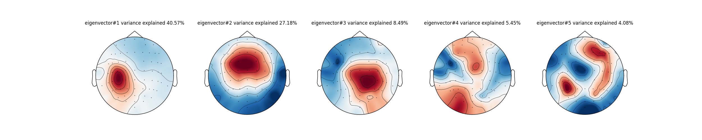
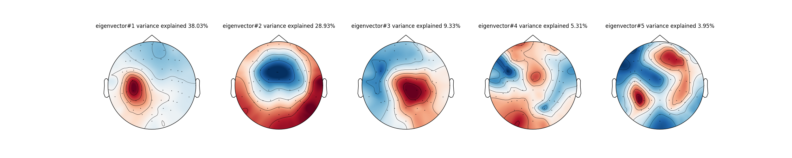
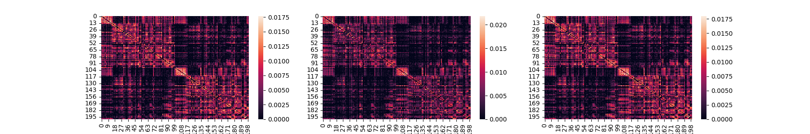
3.4 Compute and Visualize Similarity and Visualize Topomaps for Maximum Similarity#
%% Compute cosine similarity between eigenvectors and EEG data for specific time windows.
comp_n=0
start_tp = 140
end_tp = 230
ts2use = 'simulated' # 'empirical' or 'simulated'
max_similairty = []
for sbj in range(len(pck_files)):
similarity = []
for tp in range(start_tp,sim_eeg[sbj,:,:].shape[1]-end_tp):
if ts2use == 'empirical':
similarity.append(1 - scipy.spatial.distance.cosine(np.abs(U[:, comp_n]), np.abs(epochs._data[sbj,:,900+tp])))
else:
similarity.append(1 - scipy.spatial.distance.cosine(np.abs(U_sim[:, comp_n]), np.abs(sim_eeg[sbj,:,tp])))
similarity = np.array(similarity)
max_similairty.append(np.where(similarity == np.max(similarity))[0][0])
nrows = 2
ncols=3
fig, axes = plt.subplots(figsize=(20, 10), nrows=nrows, ncols=ncols)
sbj=0
for axes_row in range(nrows):
for ax in range(ncols):
if ts2use == 'empirical':
mne.viz.plot_topomap(epochs._data[sbj,:,900+max_similairty[sbj]+start_tp], epochs.info, show=False, axes=axes[axes_row,ax])
else:
mne.viz.plot_topomap(sim_eeg[sbj,:,max_similairty[sbj]+start_tp], epochs.info, show=False, axes=axes[axes_row,ax])
axes[axes_row,ax].set_title(str(max_similairty[sbj] + start_tp - 100) + 'ms after TMS for sbj#' + str(sbj))
sbj=sbj+1
sbj=sbj
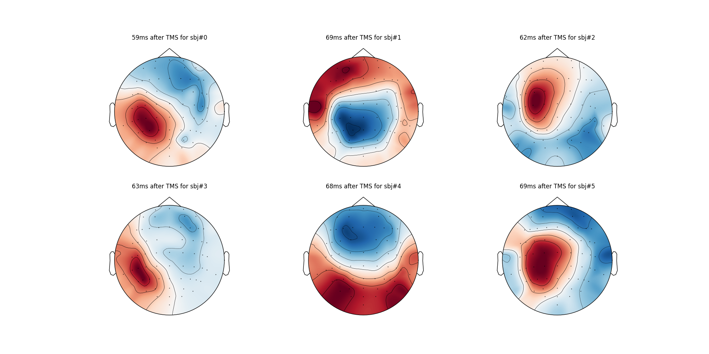
Result Description
Timing and topographies of the prototypical TMS-EEG evoked potential (TEP) response pattern in each subject.
This figure can be found in Appendix 2—figure 5 Panel A.
These figures extend the single-subject examples from TEP channel data singular value decompositions (SVD) decompositions in Figure 5.
(A) First right singular vectors from TEP SVDs for all subjects, with corresponding time location indicating the time point of maximum expression for the corresponding left singular vector (temporal eigenmode).
sns.displot(np.array(max_similairty) + start_tp - 100)
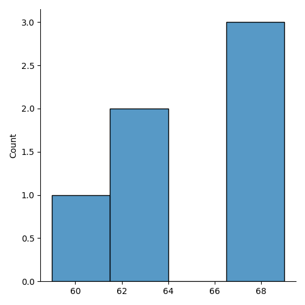
3.5 Extract Peaks from EEG Data and Correlate Features with Peaks#
Analyze the first peaks in EEG signals across multiple subjects, comparing empirical and simulated data.
Quantify the relationship between these peak properties (latency and amplitude) and external variables (new_df1), likely representing behavioral, experimental, or clinical metrics.
# Read epoched EEG data
epochs = mne.read_epochs(files_dir + '/all_avg.mat_avg_high_epoched', verbose=False)
evoked = epochs.average() # Compute the average of the epochs
# Convert peak locations from milliseconds to seconds
peaks_locs = (np.array(max_similairty)) / 1000
# Initialize lists to store results
first_ch = [] # To store the channel of the first peak
fist_peak_locs = [] # To store the locations of the first peak
fist_peak_amp = [] # To store the amplitudes of the first peak
# Loop through each subject's data
for xx in range(peaks_locs.shape[0]):
sbj2import = xx # Current subject index
# Create a copy of the evoked data for the current subject
single_EEG = evoked.copy()
single_EEG.data = epochs._data[sbj2import, :, :] # Replace with the subject's raw EEG data
# Simulate EEG data by modifying a specific time window
simulated_EEG = single_EEG.copy()
simulated_EEG.data[:, 900:1300] = sim_eeg[sbj2import, :, :] # Replace data in this window with simulated EEG
# Find peaks in the EEG data
if ts2use == 'empirical': # Use empirical (original) data
ch, peak_locs1, peak_amp1 = single_EEG.get_peak(ch_type='eeg', tmin=peaks_locs[xx], tmax=peaks_locs[xx], return_amplitude=True)
else: # Use simulated data
ch, peak_locs1, peak_amp1 = simulated_EEG.get_peak(ch_type='eeg', tmin=peaks_locs[xx], tmax=peaks_locs[xx], return_amplitude=True)
# Append results to respective lists
first_ch.append(ch)
fist_peak_locs.append(peak_locs1)
fist_peak_amp.append(peak_amp1)
# Convert lists to numpy arrays for easier analysis
first_ch = np.array(first_ch)
fist_peak_locs = np.array(fist_peak_locs)
fist_peak_amp = np.array(fist_peak_amp)
# Initialize lists to store correlation results
r_lat = [] # Correlation coefficients for latency
p_lat = [] # P-values for latency
r_amp = [] # Correlation coefficients for amplitude
p_amp = [] # P-values for amplitude
# Loop through keys in a dataframe or dictionary (new_df1)
for j in new_df1.keys():
# Correlation between new_df1[j] and first peak locations (latency)
r, p = scipy.stats.pearsonr(new_df1[j], fist_peak_locs)
r_lat.append(r)
p_lat.append(p)
# Correlation between new_df1[j] and first peak amplitudes
r, p = scipy.stats.pearsonr(new_df1[j], fist_peak_amp)
r_amp.append(r)
p_amp.append(p)
# Convert correlation results to numpy arrays
r_lat = np.array(r_lat)
p_lat = np.array(p_lat)
r_amp = np.array(r_amp)
p_amp = np.array(p_amp)
(array([3]),)
(array([6]),)
Visualize the results
# Visualize the relationship between the first EEG peak's amplitude or latency and a variable of interest from new_df1.
# Optionally exclude outliers to ensure robust analysis.
# Provide statistical insight into the relationship through R² and p-values.
epochs = mne.read_epochs(files_dir + '/all_avg.mat_avg_high_epoched', verbose=False)
# Settings for plotting and analysis
key2plot = 1
exclude_outliers = False
std_from_mean = 2
variable2plot = 'amplitude' # Choose 'amplitude' or 'latency' for the analysis
# Select data to plot based on the variable of interest
if variable2plot == 'amplitude':
data2plot = {'amp_all': fist_peak_amp, list(new_df1.keys())[key2plot]: new_df1[list(new_df1.keys())[key2plot]]}
else:
data2plot = {'lat_all': fist_peak_locs, list(new_df1.keys())[key2plot]: new_df1[list(new_df1.keys())[key2plot]]}
# Create a DataFrame from the selected data
df2plot = pd.DataFrame(data2plot)
# Initialize a list to store indices of outliers
outlier = []
# Identify outliers in the data (if enabled)
if exclude_outliers:
# Calculate upper and lower bounds for outliers in the first variable
std_up = df2plot[list(data2plot.keys())[0]].mean() + (std_from_mean * df2plot[list(data2plot.keys())[0]].std())
std_down = df2plot[list(data2plot.keys())[0]].mean() - (std_from_mean * df2plot[list(data2plot.keys())[0]].std())
# Check for outliers above the upper bound
if np.shape(np.where(df2plot[list(data2plot.keys())[0]] > std_up)[0])[0] > 0:
outlier.append(np.where(df2plot[list(data2plot.keys())[0]] > std_up)[0][0])
# Check for outliers below the lower bound
if np.shape(np.where(df2plot[list(data2plot.keys())[0]] < std_down)[0])[0] > 0:
outlier.append(np.where(df2plot[list(data2plot.keys())[0]] < std_down)[0][0])
# Calculate upper and lower bounds for outliers in the second variable
std_up = df2plot[list(new_df1.keys())[key2plot]].mean() + (std_from_mean * df2plot[list(new_df1.keys())[key2plot]].std())
std_down = df2plot[list(new_df1.keys())[key2plot]].mean() - (std_from_mean * df2plot[list(new_df1.keys())[key2plot]].std())
if exclude_outliers:
# Check for outliers below the lower bound
if np.shape(np.where(df2plot[list(new_df1.keys())[key2plot]] < std_down)[0])[0] > 0:
outlier.append(np.where(df2plot[list(new_df1.keys())[key2plot]] < std_down)[0][0])
# Check for outliers above the upper bound
if np.shape(np.where(df2plot[list(new_df1.keys())[key2plot]] > std_up)[0])[0] > 0:
outlier.append(np.where(df2plot[list(new_df1.keys())[key2plot]] > std_up)[0][0])
# Remove identified outliers from the DataFrame
df2plot = df2plot.drop(outlier)
print('outliers=' + str(outlier)) # Print the indices of the outliers
# Create a scatter plot with a linear regression line
sns.lmplot(x=list(new_df1.keys())[key2plot], y=list(data2plot.keys())[0], data=df2plot)
# Add a title to the plot, including R^2 and p-values
if variable2plot == 'amplitude':
plt.title('Amplitude R^2=' + str(round((r_amp[key2plot] ** 2), 2)) + ' p=' + str(round(p_amp[key2plot], 2)))
else:
plt.title('Latency R^2=' + str(round((r_lat[key2plot] ** 2), 2)) + ' p=' + str(round(p_lat[key2plot], 2)))
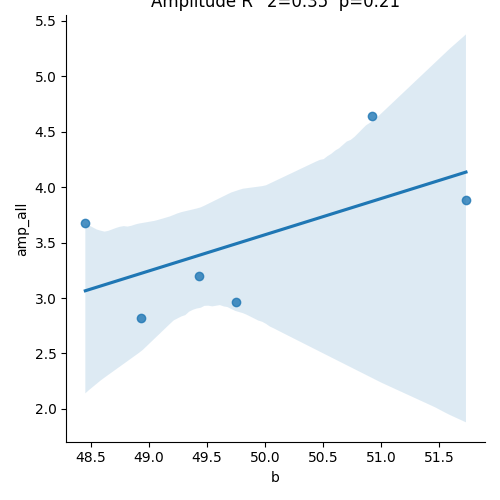
outliers=[]
Result Description: This figure could be found at Appendix 2—figure 10. Structural connectivity predictor of TMS-EEG propagation. A significant positive correlation (R2=52%, p=0.02) was found between the modularity of the fitted structural connectomes and the area under the curve (AUC) extracted for significant post-TMS time points. This findings replicate the results reported in Momi et al., 2021b.
4 - Model vs. data comparisons and visualizations#
start_time = time.time()
#files_dir = '/external/rprshnas01/netdata_kcni/jglab/Data/Davide/reproduce_Momi_et_al_2022/PyTepFit/data'
pck_files = sorted(glob.glob(files_dir + '/*_fittingresults_stim_exp.pkl'))
# pck_files.pop()
pck_files.sort(key=lambda var:[int(x) if x.isdigit() else x for x in re.findall(r'[^0-9]|[0-9]+', var)])
with open(pck_files[2], 'rb') as f:
data = pickle.load(f)
keys=[]
for i in vars(data.output_sim).keys():
keys.append(i)
4.1 Draw the plot for each subject#
num_subjects = len(pck_files)
for sbj2plot in range(num_subjects):
print(f"Processing Subject: {sbj2plot}")
epochs = mne.read_epochs(files_dir + '/all_avg.mat_avg_high_epoched', verbose=False)
empirical_data = epochs.average()
empirical_data.data = epochs._data[sbj2plot, :, :] # subject-specific data
# Subject-specific peak detection from their own data
ts_args = dict(xlim=[-0.025, 0.3])
ch, peak_locs1 = empirical_data.get_peak(ch_type='eeg', tmin=-0.05, tmax=0.04)
ch, peak_locs2 = empirical_data.get_peak(ch_type='eeg', tmin=0.02, tmax=0.1)
ch, peak_locs4 = empirical_data.get_peak(ch_type='eeg', tmin=0.12, tmax=0.15)
ch, peak_locs5 = empirical_data.get_peak(ch_type='eeg', tmin=0.15, tmax=0.20)
times = [peak_locs1, peak_locs2, peak_locs4, peak_locs5]
empirical_data.plot_joint(ts_args=ts_args, times=times, title=f'Empirical TEPs for sub {sbj2plot}')
with open(pck_files[sbj2plot], 'rb') as f:
data = pickle.load(f)
simulated_data = epochs.average()
simulated_data.data[:, 900:1300] = data.output_sim.eeg_test
simulated_data.plot_joint(ts_args=ts_args, times=times, title=f'Simulated TEPs for sub {sbj2plot}')
print(f"Subject {sbj2plot} processed successfully.\n")
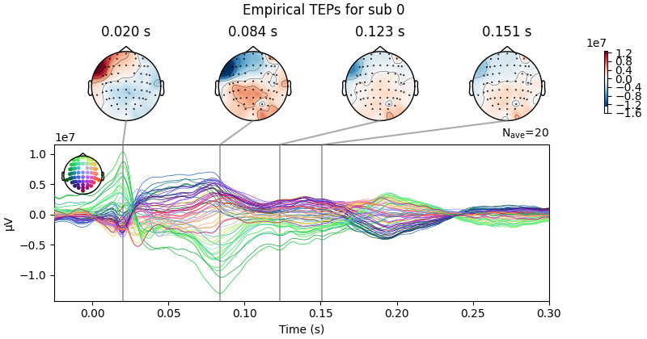
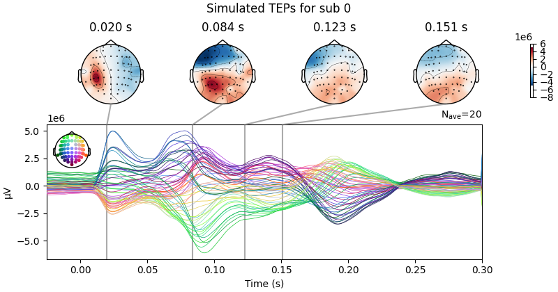
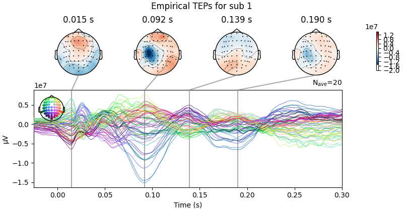
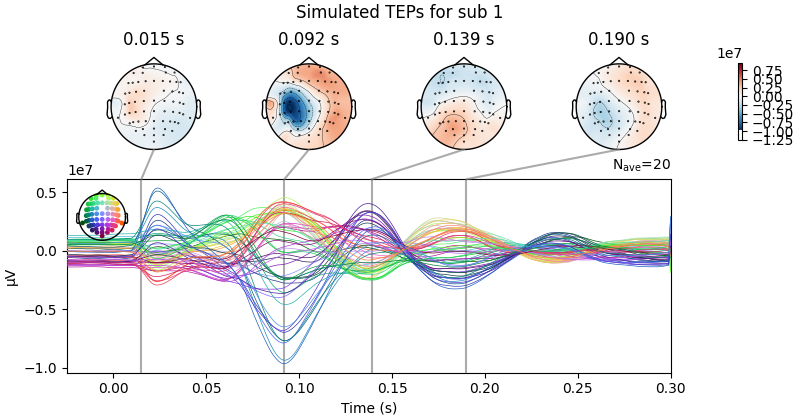
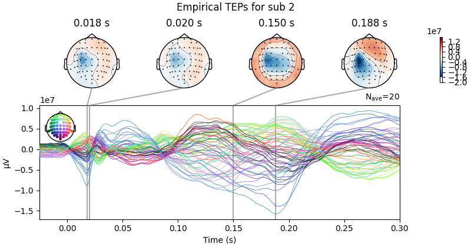
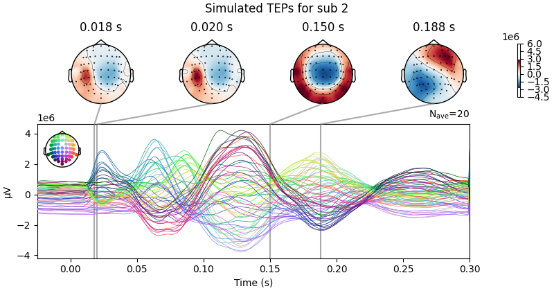
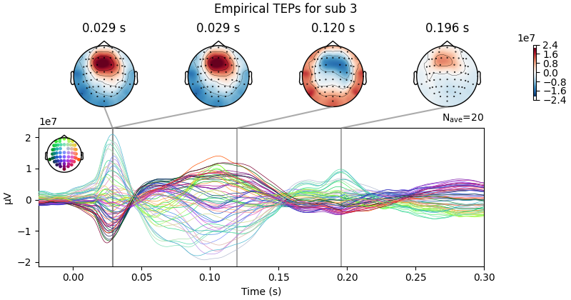
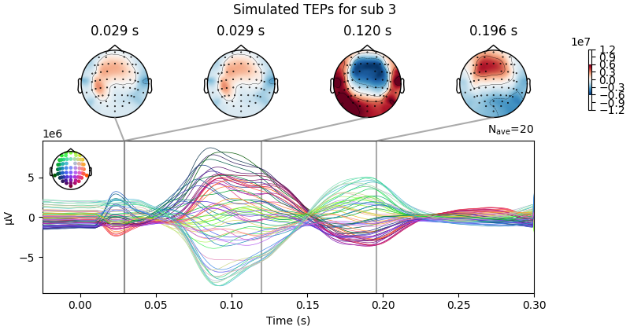
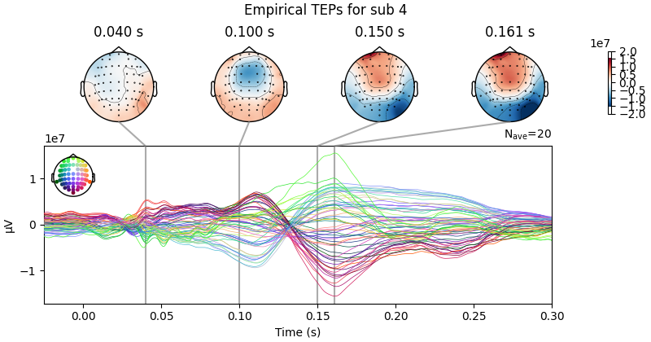
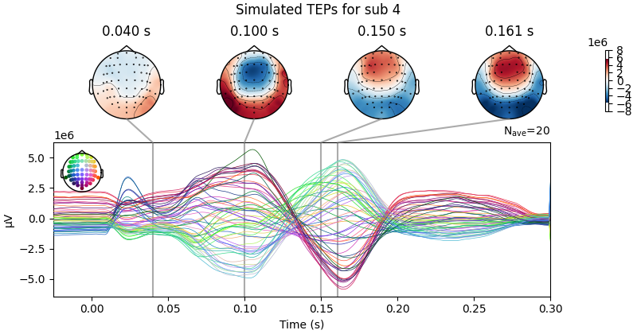
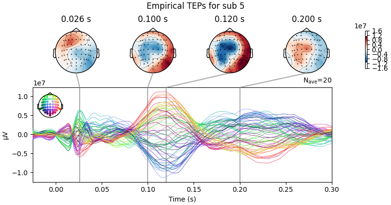
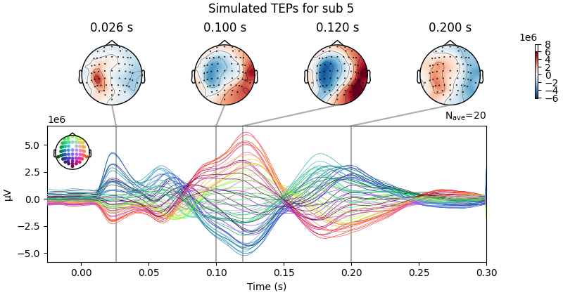
Processing Subject: 0
Projections have already been applied. Setting proj attribute to True.
Projections have already been applied. Setting proj attribute to True.
Subject 0 processed successfully.
Processing Subject: 1
Projections have already been applied. Setting proj attribute to True.
Projections have already been applied. Setting proj attribute to True.
Subject 1 processed successfully.
Processing Subject: 2
Projections have already been applied. Setting proj attribute to True.
Projections have already been applied. Setting proj attribute to True.
Subject 2 processed successfully.
Processing Subject: 3
Projections have already been applied. Setting proj attribute to True.
Projections have already been applied. Setting proj attribute to True.
Subject 3 processed successfully.
Processing Subject: 4
Projections have already been applied. Setting proj attribute to True.
Projections have already been applied. Setting proj attribute to True.
Subject 4 processed successfully.
Processing Subject: 5
Projections have already been applied. Setting proj attribute to True.
Projections have already been applied. Setting proj attribute to True.
Subject 5 processed successfully.
Result Description:
Empirical and Simulated TEPs figure for all subjects. Optimized TMS-EEG evoked potential (TEP) models for all subjects.
For every pair of rows, empirical (upper) and simulated (lower) TMS-EEG responses are shown for every study subject, extending main text Figure 2 where a selected subset of subjects’ data are shown. These data reiterate and reinforce the demonstrations in Figure 2 that the model-generated electroencephalography (EEG) activity time series achieve robust recovery of individual subjects’ empirical TEP propagation patterns.
This is the Appendix 2—figure 1 plot.
Load Experimental and Simulated EEG Data
from scipy import spatial
only_high_trial = io.loadmat(files_dir + '/only_high_trial.mat')['only_high_trial']
all_sim_EEG = []
all_sim_parcels = []
for sbj in range(len(pck_files)):
with open(pck_files[sbj], 'rb') as f:
data = pickle.load(f)
all_sim_EEG.append(data.output_sim.eeg_test)
all_sim_parcels.append(data.output_sim.E_test - data.output_sim.I_test)
all_sim_EEG=np.array(all_sim_EEG) # JG_ADD
all_sim_parcels=np.array(all_sim_parcels)
Append Simulated EEG and Parcel Data and Aggregate Permutation Results
from scipy.stats import norm
from scipy import stats
from random import shuffle
# Parameters for permutation testing
nPerms = 1 # Number of permutations
pval = 0.05 # p-value threshold
sigThresh = norm.ppf(1 - pval) # Two-tailed significance threshold (z-score)
# Initialize similarity and correlation matrices
similarity = np.zeros((only_high_trial.shape[0], only_high_trial.shape[1]))
corr_r = np.zeros((only_high_trial.shape[0], only_high_trial.shape[1])) # Correlation coefficients
corr_p = np.zeros((only_high_trial.shape[0], only_high_trial.shape[1])) # p-values for correlations
# Loop through each subject
for subj in range(len(pck_files)): # Modify range as needed based on data shape
evoked_T0 = only_high_trial[subj, :, 900:1300] # Extract original EEG signal in a specific window
evoked_T2 = all_sim_EEG[subj, :, :] # Extract simulated EEG signal
# Loop through each channel
for channel in range(evoked_T2.shape[0]):
electrode_T0 = evoked_T0[channel, :] # Original EEG signal for a channel
electrode_T2 = evoked_T2[channel, :] # Simulated EEG signal for the same channel
# Normalize the signals
electrode_T0 = (electrode_T0 - min(electrode_T0)) / (max(electrode_T0) - min(electrode_T0))
electrode_T2 = (electrode_T2 - min(electrode_T2)) / (max(electrode_T2) - min(electrode_T2))
# Compute cosine similarity and Pearson correlation
similarity[subj, channel] = 1 - spatial.distance.cosine(electrode_T0, electrode_T2)
r, p = stats.pearsonr(electrode_T0, electrode_T2)
corr_r[subj, channel] = r # Store correlation coefficient
corr_p[subj, channel] = p # Store p-value
# Process similarity results
similarity_corr = similarity.copy()
similarity_corr = np.clip(similarity_corr, 0, 1, similarity_corr) # Clip values between 0 and 1
zthresh = np.abs(stats.zscore(similarity_corr)) # Compute z-scores
zthresh[np.abs(zthresh) < sigThresh] = 0 # Apply significance threshold
zthresh_avg = np.mean(zthresh, axis=0) # Compute average z-scores
# Process p-values
corr_p_sign = corr_p.copy()
corr_p_sign_avg = np.mean(corr_p_sign, axis=0) # Average p-values across subjects
corr_p_sign_avg[corr_p_sign_avg > pval] = 0 # Retain significant p-values only
# Initialize matrices for permutation testing
fake_similarity = np.zeros((nPerms, only_high_trial.shape[0], only_high_trial.shape[1]))
fake_corr_p = np.zeros((nPerms, only_high_trial.shape[0], only_high_trial.shape[1]))
fake_corr_r = np.zeros((nPerms, only_high_trial.shape[0], only_high_trial.shape[1]))
# Permutation testing
for perm in range(nPerms):
for subj in range(len(pck_files)): # Modify range as needed
evoked_T0 = only_high_trial[subj, :, 900:1300] # Original EEG signal
evoked_T2 = all_sim_EEG[subj, :, :] # Simulated EEG signal
# Loop through each channel
for channel in range(evoked_T2.shape[0]):
electrode_T0 = evoked_T0[channel, :] # Original EEG signal for a channel
ind_list = [i for i in range(electrode_T2.shape[0])]
shuffle(ind_list) # Shuffle indices
electrode_T0 = electrode_T0[ind_list] # Randomize signal
electrode_T2 = evoked_T2[channel, :] # Simulated EEG signal
shuffle(ind_list) # Shuffle indices again
electrode_T2 = electrode_T2[ind_list] # Randomize signal
# Normalize the signals
electrode_T0 = (electrode_T0 - min(electrode_T0)) / (max(electrode_T0) - min(electrode_T0))
electrode_T2 = (electrode_T2 - min(electrode_T2)) / (max(electrode_T2) - min(electrode_T2))
# Compute similarity and correlation for shuffled data
fake_similarity[perm, subj, channel] = 1 - spatial.distance.cosine(electrode_T0, electrode_T2)
r, p = stats.pearsonr(electrode_T0, electrode_T2)
fake_corr_r[perm, subj, channel] = r
fake_corr_p[perm, subj, channel] = p
# Process permutation test results
fake_similarity_avg = np.mean(fake_similarity, axis=0)
fake_zthresh = np.abs(stats.zscore(fake_similarity_avg)) # Compute z-scores
fake_zthresh[np.abs(fake_zthresh) < sigThresh] = 0 # Apply significance threshold
fake_zthresh_avg = np.mean(fake_zthresh, axis=0)
fake_corr_p_sign = fake_corr_p.copy()
fake_corr_p_avg = np.mean(np.mean(fake_corr_p_sign, axis=0), axis=0) # Average p-values across permutations
fake_corr_p_avg[fake_corr_p_avg > pval] = 0 # Retain significant p-values only
4.2 Visualize Correlation Results#
x_pos = np.arange(corr_r.shape[0])
plt.rcParams["figure.figsize"] = (20,6)
barlist = plt.bar(x_pos, np.mean(corr_r, axis=1))
color_map=plt.get_cmap('coolwarm')
for xx in range(np.mean(corr_r, axis=1).shape[0]):
rgba = color_map(np.mean(corr_r, axis=1)[xx])
barlist[xx].set_color([rgba[0],rgba[1],rgba[2]])
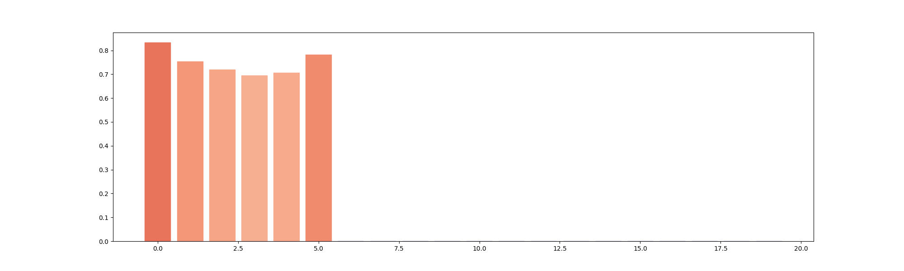
Comparison between simulated and empirical TMS-EEG data in source space. Bar plot showing high vertex-wise cosine similarity between empirical and simulated sources for all the subjects. This plot can be found in Figure 3 Panel E
Creating function for calculating PCI
epochs = mne.read_epochs(files_dir + '/all_avg.mat_avg_high_epoched', verbose=False)
evoked = epochs.average()
par = {'baseline_window':(-0.4,-0.1), 'response_window':(0,0.3), 'k':1.2, 'min_snr':1.1,
'max_var':99, 'embed':False,'n_steps':100}
PCI_sim = np.zeros((len(pck_files)))
PCI_emp = np.zeros((len(pck_files)))
for sbj in range(len(pck_files)):
PCI_emp[sbj] = calc_PCIst(epochs._data[sbj, :, :], evoked.times, **par, full_return=False)
with open(pck_files[sbj], 'rb') as f:
data = pickle.load(f)
simulated_EEG_st=evoked.copy()
simulated_EEG_st.data[:,900:1300] = data.output_sim.eeg_test
PCI_sim[sbj] = calc_PCIst(simulated_EEG_st._data, evoked.times, **par, full_return=False)
4.3 Visualization of Comparison between simulated and empirical TMS-EEG data in channel space.#
x_pos = np.arange(corr_r.shape[0])
plt.rcParams["figure.figsize"] = (20,6)
data2plot = {
"PCI_sim": PCI_sim,
"PCI_emp": PCI_emp,
}
plt.rcParams["figure.figsize"] = (20,6)
fig, ax = plt.subplots()
bp_1(ax, data2plot, total_width=.8, single_width=.9)
plt.show()
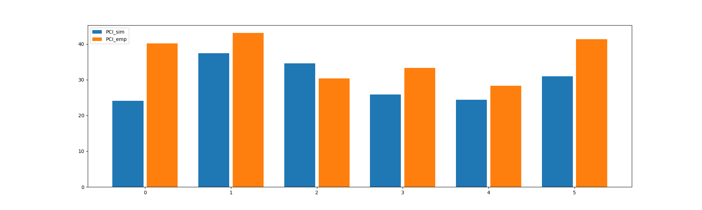
plt.rcParams["figure.figsize"] = (20,6)
df2plot = pd.DataFrame(np.vstack((PCI_sim, PCI_emp)).T, columns = ['PCI_sim', 'PCI_emp'])
scatter = sns.lmplot(x="PCI_sim", y="PCI_emp", data=df2plot);
r, p = scipy.stats.pearsonr(df2plot['PCI_sim'], df2plot['PCI_emp'])
ax = plt.gca()
ax.set_title('R2=' + str(round(r,2)) + ' p=' + str(round(p,2)))
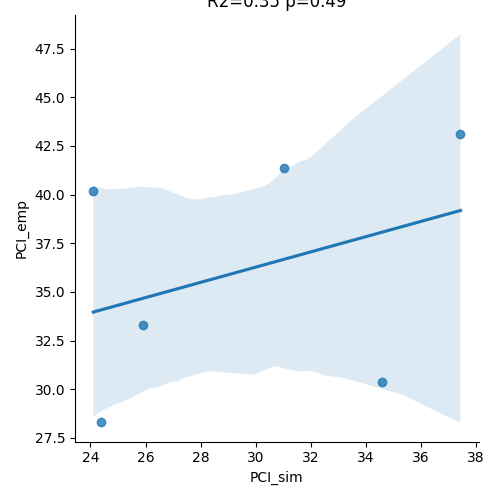
Those two plots above can be found in Figure 2 Panel D Comparison between simulated and empirical TMS-EEG data in channel space. Perturbational complexity index (PCI) values extracted from the empirical (orange) and simulated (blue) TMS-EEG time series (left). A significant positive correlation (R2=80%, p<0.001) was found between the simulated and the empirical PCI (right), demonstrating high correspondence between empirical and simulated data.
4.4 Comparison between simulated and empirical TMS-EEG data in source space.#
x_pos = np.arange(corr_r.shape[0])
epochs = mne.read_epochs(files_dir + '/all_avg.mat_avg_high_epoched', verbose=False)
evoked = epochs.average()
ts_args = dict(xlim=[-0.025,0.3])
ch, peak_locs1 = evoked.get_peak(ch_type='eeg', tmin=-0.05, tmax=0.04)
ch, peak_locs2 = evoked.get_peak(ch_type='eeg', tmin=0.04, tmax=0.07)
#ch, peak_locs3 = evoked.get_peak(ch_type='eeg', tmin=0.1, tmax=0.12)
ch, peak_locs4 = evoked.get_peak(ch_type='eeg', tmin=0.12, tmax=0.15)
ch, peak_locs5 = evoked.get_peak(ch_type='eeg', tmin=0.15, tmax=0.20)
times = [peak_locs1, peak_locs2, peak_locs4, peak_locs5]
evoked.plot_joint(ts_args=ts_args, times=times, title='Empirical Grand Mean');
epochs._data[:len(pck_files),:,900:1300] = all_sim_EEG[:len(pck_files)]
sim_evoked = epochs.average()
ts_args = dict(xlim=[-0.025,0.3])
ch, peak_locs1 = sim_evoked.get_peak(ch_type='eeg', tmin=-0.05, tmax=0.04)
ch, peak_locs2 = sim_evoked.get_peak(ch_type='eeg', tmin=0.04, tmax=0.07)
#ch, peak_locs3 = evoked.get_peak(ch_type='eeg', tmin=0.1, tmax=0.12)
ch, peak_locs4 = sim_evoked.get_peak(ch_type='eeg', tmin=0.12, tmax=0.15)
ch, peak_locs5 = sim_evoked.get_peak(ch_type='eeg', tmin=0.15, tmax=0.20)
times = [peak_locs1, peak_locs2, peak_locs4, peak_locs5]
sim_evoked.plot_joint(ts_args=ts_args, times=times, title='Simulated Grand Mean');
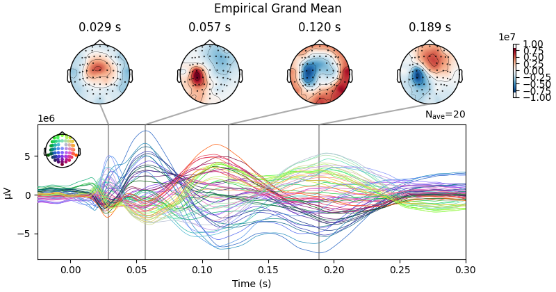
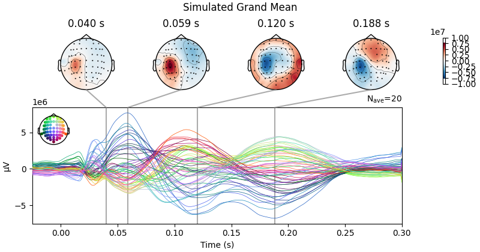
Projections have already been applied. Setting proj attribute to True.
Projections have already been applied. Setting proj attribute to True.
Result Description: TMS-EEG time series showing a robust recovery of grand-mean empirical TMS-EEG evoked potential (TEP) patterns in model-generated electroencephalography (EEG) time series
This plot could be found as Panel A in Figure 3.
References#
Momi, D., Wang, Z., Griffiths, J.D. (2023). “TMS-evoked responses are driven by recurrent large-scale network dynamics.” eLife, 10.7554/eLife.83232. https://doi.org/10.7554/eLife.83232
Total running time of the script: (2 minutes 45.977 seconds)